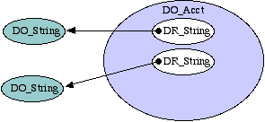
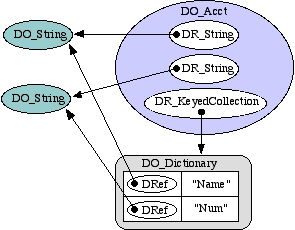
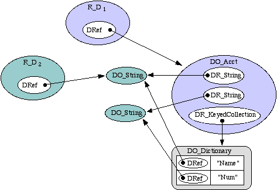
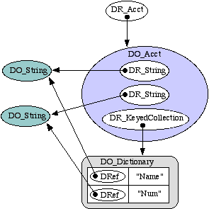
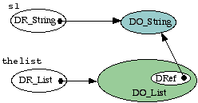
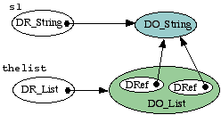
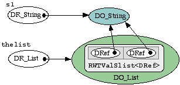

Destiny C++ | Overview | Reference
Class and Object Design | Sorting | R_D
| rsl2D | Martin's Questions
Class and Object Design
all updated Dec 15, 1998
- Object Basics
- Composites
- DO_Acct example
- composition
- R_D: working with RSL
- DR_Acct
- Method invocation
- Collections - updated 24 Sept (new enumeration example)
- overview
- insertion
- deletion
- enumeration
- sorting
- creating new collection classes
- Streaming
All instance variables and objects in a design should be represented by DO_Object classes, classified either as DO_Atom, DO_Collection, or DO_Composite as is most appropriate. However, they are used by their companion DRef classes, or by DRef itself. This allows data to be efficiently manipulated both in C++ and in RSL without data copying, and it allows very complex object relationships to be available both in RSL and C++.
Basic DR_Object - DO_Object Relationship
The DRef class contains a pointer to a D; but usually, this is too high level. Primarily we are concerned with the two subclasses DR_Object and DO_Object; as strongly-typed smart pointers, is the job of every DRef (or DR_Object) subclass to safely manage this pointer. It must provide
operator->()safe_get()- safe_set()
- New()
- and any operator methods, as necessary, since they can't conveniently be called through
operator->().The basic relationship between a DRef and a DO_Object is quite simple, and looks like this:
A Composite Example: DO_Acct
Composite objects (those composed of other objects) inherit from the class DO_Composite, and are essentially as simple as this example account class with two instance variables, Name and Num:
the class
an instance
class DO_Acct : public DO_Composite { DR_String Name, Num; init() { Name.New(); Num.New(); } // ... }; It is important to keep these kinds of pictures in mind when thinking about DRef and DO_Object relationships. The semantics of object copying, equality, assignment can be complex at times. For example, there is a clear difference between copying a DRef and copying a DO_Object! These issues are discussed in depth elsewhere.
Comments and observations
- Why doesn't DO_Acct declare DO_String objects, instead of the DR_String as here? Two reasons, primarily. DO_Object classes are always managed by DRef objects so that they can be shared between C++ and RSL, so they can be effectively recycled, and so they can efficiently be copied.
- The
init()method above is analogous to a C++ constructor. The D system has memory management; DO_Objects are reclaimed and recycled when no longer referenced any more. There are free lists of DO_Objects that are not in use, and conseqently, they are not actually destroyed.- A DRef, like the DR_String declarations in the class DO_Acct above, are initially "null". Like the declaration of a C pointer, they point to nothing. Unlike the declaration of a C pointer, they are initialized to the object
DNULL; the C++ expressionif (Name == DNULL)will initially yieldtrue.- To be most useful, the DO_Acct needs a DRef class -- DR_Acct. We'll implement it in a moment. First, more details.
Abstract Composition
Now, one of the reasons for the existence of this system is so the objects may be efficiently shared with RSL in Foundation. RSL needs to do things like ask an object for an instance variable by name. RSL needs, also, to iterate over the instance variables of such objects, regardless of their class, for efficient object streaming, equality, assignment, etc. For this purpose, the superclass DO_Composite implements an instance variable lookup table, so that the picture expands to be this:
the class
an instance
class DO_Acct : public DO_Composite { DR_String Name, Num; void init() { add("Name", Name.New()); add("Num", Num.New()); } // ... }; By doing this, anyone can ask for the object "Name" and get DRef to the DO_String. Anyone, including RSL. This is exactly how RSL and C++ will share information efficiently.
- It's not clear whether this collection is necessary in all cases, since clearly it can be constructed as necessary.
Working with RSL: R_D
The Foundation 2.5 Resource R_D is introduced to solve the problem in the Resource/RSL side of things. It contains a DRef, also, and it is a mighty morphin' power Resource, which takes on the characteristics of the particular DO_Object it points to. For example, in the picture below, the DO_Acct object is available in RSL, and by asking it for "Name", one can use this DO_String in both C++ and RSL:
The coloring in this diagram of the R_D instances reflects the fact that the "character" of an R_D instance changes according to the specific kind of DO_Object they point to. R_D1, for example, takes on the appearance of being an "account" from RSL's perspective.
DR_Acct
Now, as we have seen, to be most useful DO_Objects need companion DRef objects. Let's see what these actually look like by implementing the DR_Acct class, and we'll add more details to the DO_Acct as well.
class
instance
class DR_Acct : public DR_Object { DR_Acct(const DRef& ref); DO_Object *operator->(); }; class DO_Acct : public DO_Composite { DR_String Name, Num; void init() { add("Name", Name.New()); add("Num", Num.New()); } void destroy() { Name.dump(); Num.dump(); } }; Comments
- The DR_Acct constructor is implemented as:
DR_Acct::DR_Acct(const DRef& ref) : DR_Object(ref) { }The superclass DR_Object manages setting the pointer - which is what DR_ subclasses are, anyway: smart pointers which do safe type casting.
- The method operator->() allows DR_Acct to pass-through to DO_Acct underneath it, safely. (see Method Invocation for details)
- The
destroy()method is analogous to a C++ destructor. Note in the picture that there are two references to each of the DO_Acct instance DO_Objects; only one of them, in the DO_Collection, can be automatically freed. The other must be done, explicitly, in thedestroy()method.Method Invocation
This standard sees dramatic improvements in the use of C++ from within both C++ and RSL. The only way to do this smoothly is to allow the same behavior to be invoked from both environments - with native function calling or message passing semantics in each environment. Continuing the above example, if we add a method doit(DR_String, DR_Int) to the DO_Account class, it might look like the code below. For the purposes of example, the doit() method is not very complex or interesting, and not something that an "Account" would necessarily want to do.
class DR_Acct : public DRef { DR_Acct(const DRef& ref); DO_bject *operator->(); }; class DO_Acct : public DO_Composite { DR_String Name, Num; DR_List doit(DR_String s, DR_Int i) { i++; // change the argument DR_List l(); // declare reference object and instantiate l->append(i); // add to the list return l; // send this new list out } DRef route(DR_Message m) { switch(m.method_id) { case _hdoit: return doit( DR_String(m[0]), // cast from DRef to DR_String DR_Int(m[1]) ); // cast from DRef to DR_Int default: return DO_Composite::route(m); } } void init() { add("Name", Name.New()); add("Num", Num.New()); } void destroy() { Name.dump(); Num.dump(); } };The method route is the transaction-oriented messaging interface which is used by RSL. From within C++, most often the use will be through the operator->() method of DR_Acct, such as
DR_Acct acct; acct->getStatements(...);By structuring the system this way, the C++ function getStatements(DR_DateRange dates) is exposed to RSL, literally, in a way that is type-safe from the perspective of C++, without data copying or translation of any kind.
rsl2D
In Foundaton 2.2 and prior, the tool rsl2c++ was used to generate a C++ Resource from an RSL class. Its primary drawback was that it was not smart enough to allow the C++ resources to use "regular" C++ function call semantics.rsl2D is this system's analogue to rsl2c++. Actually, rsl2D is a facade on top of a new more general tool that is the center of rsl2D, autodoc, and in the future, rsl2java, rsl2resource, ....
Collections
A collection is a class whose sole purpose is to group objects. Lists, arrays, hash tables, binary trees are all collections. These classes are all subclasses of DO_Collection.
All collections store DRef objects; the interface to collection objects speak in terms of DRef objects. Insertion, deletion, iteration, and sorting are described below and refer to the following example:
DR_List thelist = DR_List::New(); DR_String s1 = "a";Because there can be wide variation among collections classes, their interfaces also vary widely. Adding an element to a list requires less information than a hash table, but the elements of both classes can be enumerated.
Generally done via the methods
add(const DRef&), although subclasses such as DO_Dictionary require a key for each element and so provide additional insertion methods.thelist->add(s1);Let's analyze this seemingly simple statement. First, note that it was mentioned earlier that every collection contains DRef objects explicity, not sublcasses. Yet here, we're asking it to insert a DR_String object, explicitly. What is going on? The following diagram shows the details.

Both variables s1 and thelist are
DRefobjects and so point to their respectiveDO_Objects. This picture disregards the internal implementation of DO_List - other than the fact that there is a DRef object.If we were to add the same object again, that is if we repeated the statement thelist->add(s1); we would have this:

We could also add a string to the list this way:
thelist->add( DR_String("a string") );...
Enumeration
Each collection class has a companion enumerator class, subclass of DO_Enumerator. As much as possible, enumeration semantics are the same as in Java. Here is how we do something to every string in a list:DR_String s; DR_Enumerator en(thelist); // this has a bug, use the below while (en->hasMoreElements()) { s = en->nextElement(); } DR_String s; if (thelist.isValid()) { DR_Enumerator en = thelist->elements(); // works while (en->hasMoreElements()) { s = en->nextElement(); } } // if
All this example does is change the DRef s to point to every DO_Object in thelist. For a real example, consider the toString() method of DO_Collection, which translates any subclass instance into a string:DR_String DO_Collection::toString() { DR_Enumerator dre(elements()); DR_String s; while (dre->hasMoreElements()) { s += dre->nextElement()->toString(); } return s; }In the first example, the DR_Enumerator object is constructed with the collection object; in the second, it is constructed with the result of the method elements(). These are the same; in the first, the call to elements() is implicit. This method actually creates a DO_Enumerator object - the implementation side of the DR_Enumerator. In fact, any specific DO_Enumerator will do -- and in this case, it is actually a DO_ListEnumerator.
Because DO_Composite objects maintain a collection of their instance variables, it is possible to write a completely generic sort in which we can compare and order possibly heterogeneous objects on multiple "keys". This requires comparator objects, and the most direct interface is DO_List::sort(), which uses SortedBinaryTree. This has been done and its details may be found in the Sorting and Comparison section.
Creating new collection classes
In general, collections are actually implemented by Rogue Wave collection classes. The one essential unifying detail is that they store, by value, DRef objects. No collections by C++ pointer! It is the DRef classes which maintain pointers. So, for example, the DO_List class uses the Rogue Wave collection class RWTValSlist<DRef>. Now, because C++ requires objects to be a certain exact size in memory, we cannot have a collection of hetereogeneous types by value; DRef serves this purpose by being able to point to any DO_Object, and safe (dynamic) casting to specific classes allows one to use a heterogeneous (by DO_Object) collection to store objects of a specific type and still ensure C++-style type saftey.
Implementation-wise, the second example given above in Insertion looks like this:

Streaming
There are two ways objects may be streamed: via the toString() method and using an instance of classes derived from OStream. These produce String objects rather than being streams in the sense of the C++ iostream class for the most flexibility. The OStream hierarchy is, at the moment:
- OStream
- ECI_OStream
- XML_OStream
As usual, this hierarchy is deceptively simple. In reality, there are eight C++ classes here...
What is the difference? toString() is simple and not extensible; OStream is very flexible. One example is that toString() of String just returns itself, whereas ECI requires that strings be quoted and control characters translated (eg newline, etc). ECI_OStream will do this.
Examples
How does it work?
There are two basic kinds of objects: atoms and collections. Collections are divided into those whose elements have a key and those that aren't. Collections, including Composite, are collections of either other collections or atoms, so the question comes down to dealing with each individual kind of atom, and then how these atoms come together to form a stream. Because collections are abstract containers which can be enumerated, a general streaming mechanism can be implemented provided that the atoms can be streamed intelligently. In the case of the ECI_OStream, the special cases are keyed collections (and thus composite), for which a key is required to be associated with each element, and String which is quoted; other atoms are simply toString()'d.